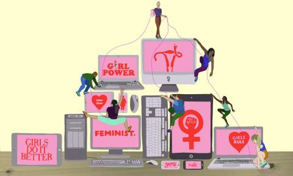

Feminismo 2.0,este concepto se utiliza para describir como el movimiento feminista ha evolucionado y se ha adaptado a la era digital ,especialmente con el uso de internet y redes sociales. Esto no tiene un inicio exacto o una fecha de comienzo,ya que no es una ola historica.Es una evolución del movimiento que se dio de la mano con la popularización de la herramienta digital y la redes sociales permitiendo que el feminismo sea más accesible global y diverso que nunca.
CASO#NiUnaMeenos
El movimiento #NiUnaMenos surgio en Argentina en 2015 como una respuesta a una serie de feminicidios que conmovieron al pais.El caso que lo detonó fue el asesinato de Chiara Páez,una adolecente de 14 años que estaba embarazada .A través de twitter, un grupo de periodistas y activistas convocó a una marcha masiva utilizando el hashtag#NiUnaMenos,que rápidamente se viralizó